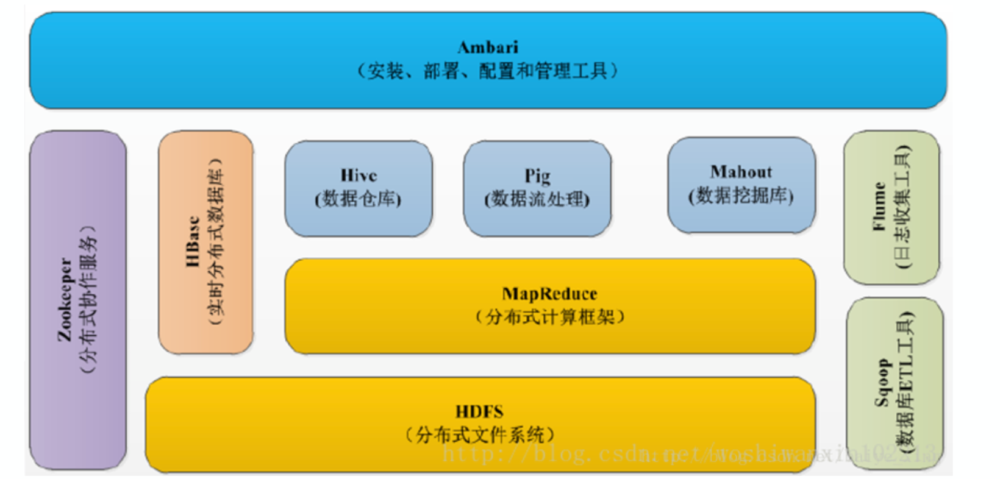
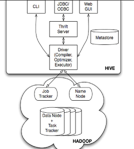

大数据基础介绍
Hadoop组件

hdfs
分布式文件系统
多台计算机联网工作，也被称为一个集群，就像单台系统一样可以解决某些问题，这样的系统存储为分布式系统
横跨多台计算机进行工作，存储在分布式文件系统上的数据会自动分布在不同节点上
分离元数据和数据：nameNode和DataNode
-
在HDFS中，nameNode是元数据存储，DataNode集群是实际的数据存储，拿出一台或者多台机器来保存元数据，而剩下的内容来保存文件的实际内容
-
nameNode不仅要存储管理在HDFS上内容的元数据，而且要记录一些数据，比如哪些节点是集群的一部分，某个文件有几份副本等，还要决定当系统宕机时或者数据副本丢失时需要做哪些准备
-
存储到文件系统中的每个文件有关联的元数据，元数据包括文件名、节点数（Node）、数据块位置，数据则是真正的数据文件
1 | # ①列出路径指定的目录中的内容 |
MapReduce
是一个基于集群的计算平台，是一个简化分布式编程的计算框架，是一个将分布式编程抽取为map和Reduce的两个阶段的编程模型
Map处理任务
1、读取HDFS中的文件，每一行解析成为一对<key,value>,每一个键值对调用一个map函数
2、重写map()，对第一步得到的<k,v>进行处理，得到一个新的<k,v>输出
3、对输出的<k,v>进行分区
4、对不同分区的数据，按照key进行升序，分组，相同key的value放在同一个集合
5、对分组后的数据进行归约
Reduce任务处理
1、多个map任务的输出，按照不同的分区，通过网络复制到不同的reduce节点上
2、对多个map的输出进行合并，排序
3、重写reduce()函数，对输入的key、value进行处理，输出新的key、value
4、把reduce的输出保存到文件中
Hive
hadoop的一个数据仓库处理工具，将hdfs底层存储的文件映射成一张张数据库表，可提供sql查询功能，本质是将sql语句转换成MapReduce程序

- 第一部分：Hive接口
- CLi：命令行输入HQL，执行语句
- JDBC/ODBC：使用相关API连接Thrift Server，然后通过代码程序实现（开发模式）
- WEB GUI：页面上操作，只有查询能使用
- 第二部分：Driver驱动程序（核心部分）
- 接收来自Hive接口的命令
- 解析（解析sql语句是否正确）
- 编译（编译生成hive能执行的计划）
- 优化执行计划（生成最佳任务）
- 第三部分：Hadoop
- 接收来自driver 的计划，调用MapReduce执行任务并返回结果
操作使用
- 一般是创建分区外表使用
- 分区可以不止一个，但具体使用时要考虑分隔符
- 具体分区给予具体hdfs路径
- 映射的hdfs路径操作需要有对应权限
基本hive sql
1 | 1，创建分区数据库表 |
常用hive sql
1 | #基本语法： |
实战hive sql
1 | create table lis.work_add_mid_gid_2 as |